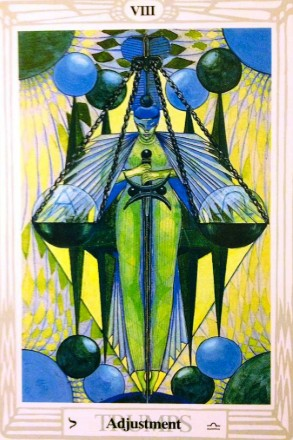

El Tarot de Thoth te trae el mensaje de La Justicia, una carta que representa el equilibrio, la verdad y las consecuencias justas de nuestras acciones. ⚖️✨
La Justicia simboliza la necesidad de tomar decisiones objetivas, evaluar las situaciones con claridad y asumir la responsabilidad de nuestros actos.
Hoy es un día para ver las cosas con objetividad. La verdad se revela, y es momento de aceptar lo que es justo.
La energía de esta carta te invita a actuar con integridad. Lo que siembras, cosechas.
Si tienes que tomar una decisión importante, analiza todos los factores con calma y justicia.
Busca relaciones equilibradas y justas. Si hay conflictos, una conversación honesta traerá claridad.
Se valorará tu ética profesional. Actúa con transparencia y recibirás reconocimiento.
Es un buen momento para evaluar tus finanzas. Mantén un balance entre ingresos y gastos.
El equilibrio es clave. Atiende tanto tu bienestar físico como emocional.
"Acojo la verdad con serenidad.
Me comprometo con la justicia en mis acciones.
La armonía guía mis decisiones y mi vida."